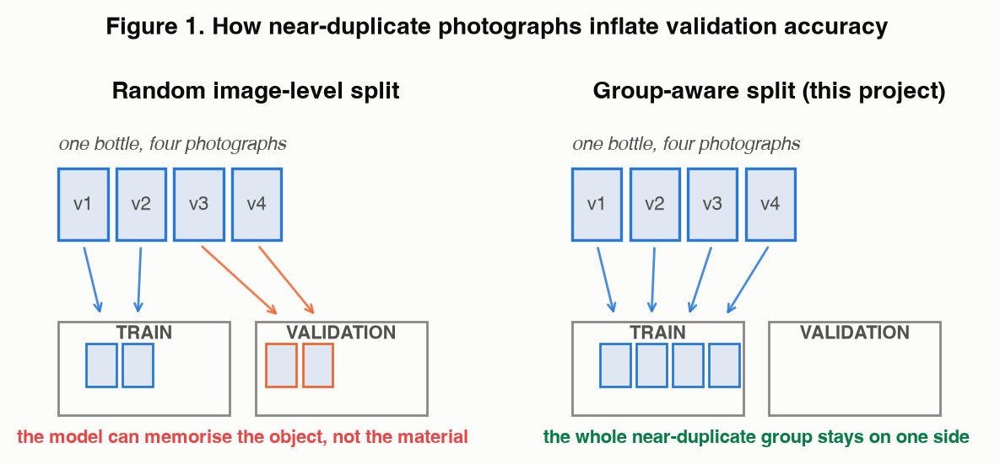
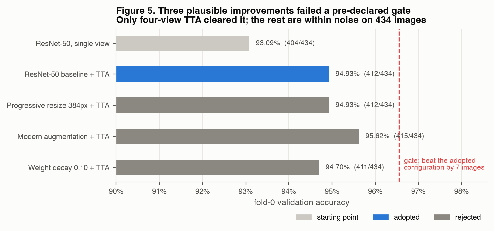
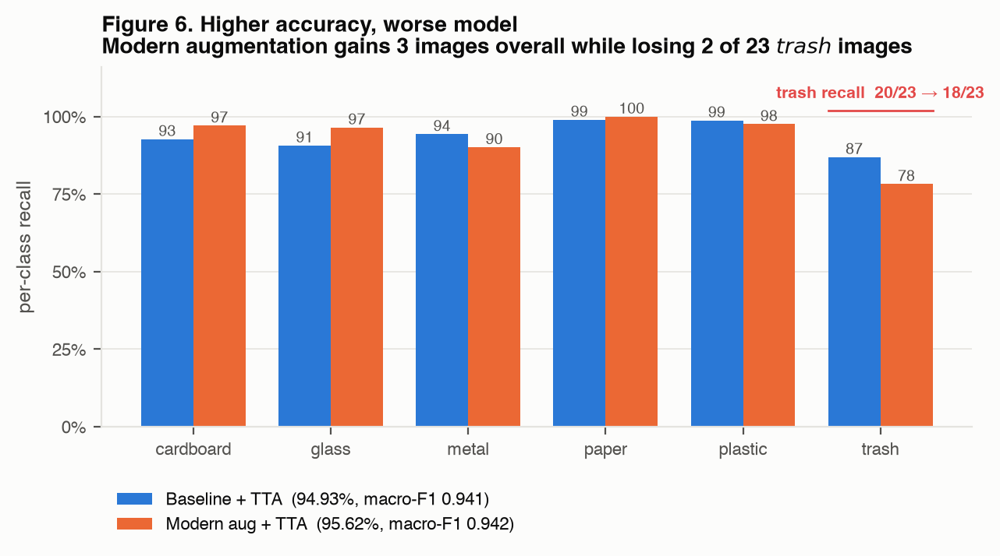
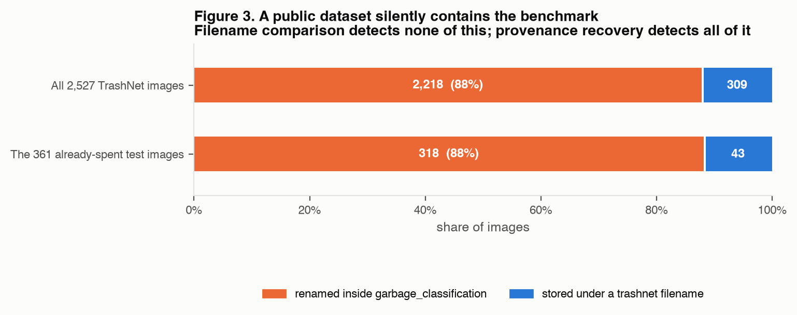
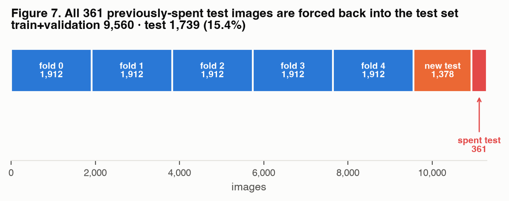
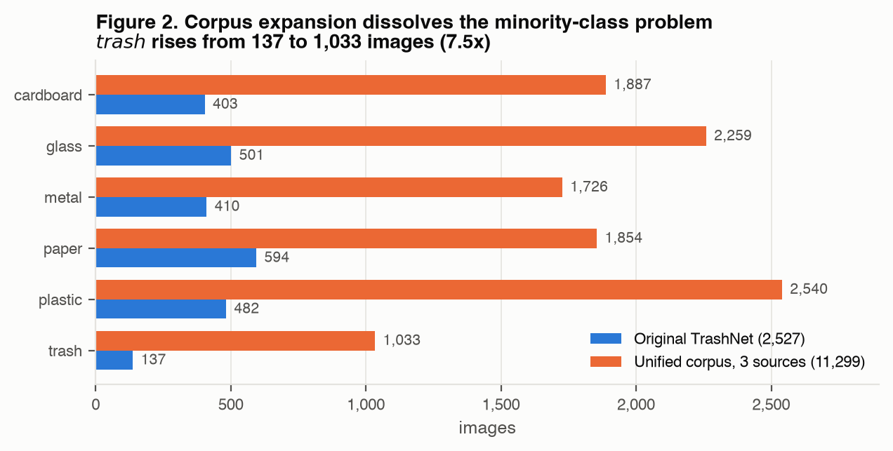
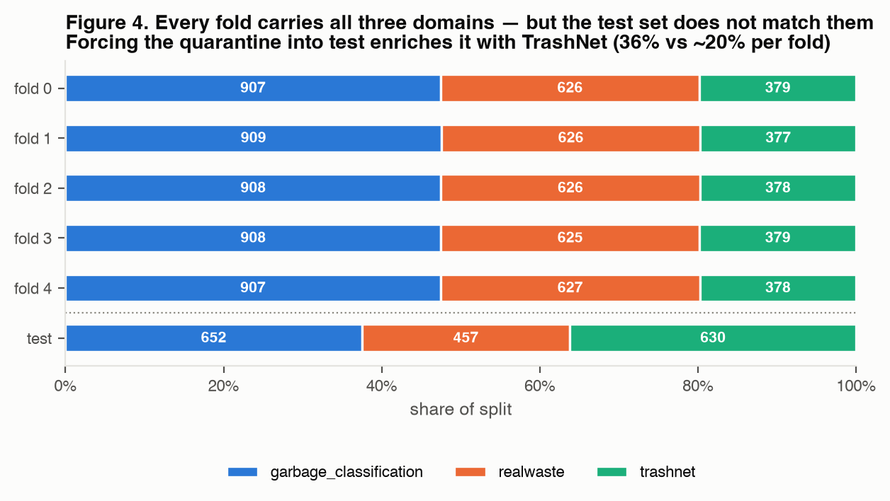

Reported accuracies of 99–100% on the TrashNet waste-classification benchmark are common. We argue that a substantial part of that headroom is methodological rather than real. TrashNet contains many photographs of the same physical object, so a random image-level split can place one view in training and another in validation, and augmenting before splitting compounds the effect. We rebuild the pipeline around near-duplicate grouping, split-then-augment ordering, and a test set used exactly once, and report 94.93% fold-0 validation accuracy and a single, never-repeated test measurement of 89.20%.
While expanding to a larger multi-source corpus, we found that a widely used public waste dataset silently contains TrashNet: 2,218 of 2,527 TrashNet images are present under different filenames, including all 361 images of our already-spent test set. We recover the mapping exactly, by reconstructing the deterministic import ordering, and force every affected near-duplicate group back into the test split under a runtime assertion.
Our central claim is not a number. It is that the credibility of any number on this benchmark depends on procedures — provenance, grouping, split ordering, and single-use evaluation — that are invisible in a results table.
Municipal waste sorting fails at the point of disposal: a person holding an object often does not know which bin it belongs in, and the cost of guessing wrong is contamination of an entire recycling stream. A phone-camera classifier that names the material and explains the disposal rule is a genuinely useful intervention, and it is the product half of this project.
The research half began with a discrepancy. Published results on TrashNet, the standard six-class waste benchmark, frequently sit at 99–100%. Our own carefully built pipeline plateaued near 95%. Rather than treat the gap as a deficiency to close, we investigated whether it was a gap at all.
It is not, or not entirely. TrashNet contains 2,527 images, many of which are multiple photographs of one physical object against a clean background. Under a random image-level split, the model may see one view of a bottle during training and be tested on another view of the same bottle. What it learned was the object; what we measured was recall of the object. Augmenting the dataset before splitting it produces the same failure more aggressively, since rotated and recolored copies of a single photograph then land on both sides of the partition.
This reframed the project. The question stopped being how high can the number go and became:
How accurately can waste images be classified when near-duplicate objects are grouped before splitting, augmentation is applied only to training data after the split, and the test set is evaluated exactly once?
We report the work in two phases. Phase 1 is a completed, measured study on TrashNet with a leakage-resistant protocol. Phase 2 expands to a five-source corpus under a 30M-parameter competition constraint; its data pipeline is built and verified, and its training results are pending. We are explicit throughout about which statements are measurements and which are not.
Figure 1 shows the failure concretely. Four photographs of one bottle enter a split. Under random image-level assignment, two land in training and two in validation; the model can score correctly on the validation pair by recognising the object it already memorised, without having learned anything transferable about plastic. Under group-aware assignment, the near-duplicate group is treated as one unit and stays entirely on one side.

We detect near-duplicates in two complementary ways and take the union. A 64-bit perceptual hash with a Hamming distance threshold of 6 catches re-encodings, crops, and small photometric changes. A ResNet-18 embedding with cosine similarity at or above 0.96 catches different exposures of the same object that hashing misses. Connected pairs are merged with a union-find structure into groups, and groups — not files — are assigned to folds.
Three properties follow, and each is asserted in code rather than documented as an intention:
The reference model is an ImageNet-pretrained ResNet-50, fine-tuned in two phases: first the replacement classification head with the backbone frozen, then the full network with a much smaller backbone learning rate. The pipeline fixes a random seed and uses ImageNet normalization, a weighted sampler for class imbalance, label smoothing, AdamW, learning-rate warmup and decay, early stopping, per-epoch checkpointing, and append-only experiment logging. Every run is configuration-driven, so model, resolution, learning rates, augmentation, weight decay, seed, and split identity are all recoverable from experiments.csv.
| Quantity | Images |
|---|---|
| Complete TrashNet inventory | 2,527 |
| Fold-0 training set | 1,732 |
| Fold-0 validation set | 434 |
| Quarantined test set | 361 |
| Train + validation pool | 2,166 |
Before running variants we fixed an acceptance rule: a change is adopted only if it gains at least seven validation images, loses no macro-F1, and costs no class more than five percentage points of recall. On a 434-image fold, seven images is roughly 1.6 percentage points — chosen so that ordinary run-to-run variation could not be reported as progress.

The rejected experiments are more instructive than the accepted one. Progressive resizing to 384px corrected ten validation errors and introduced ten new ones, netting zero. Increased weight decay lost one image and lowered macro-F1. Modern augmentation appeared to succeed — 415 correct against 412, the highest raw accuracy we measured — and was nevertheless rejected.

A single aggregate metric can move in the opposite direction from the minority class underneath it. On a six-class problem with a 137-image minority, accuracy alone is not a sufficient selection criterion — per-class recall has to be part of the gate, not part of the post-hoc discussion.
322 / 361 = 89.20% test accuracy, measured once, before the later tuning experiments, and never used for model selection.
This caption must travel with the number. It is not the score of the final optimized model; it is an honest snapshot taken at one point in the project, and it cannot be re-measured because the test set has been spent. A guard file now blocks a second evaluation programmatically (§6.3).
The competition scope changed to permit unlimited data under a single constraint: the pretrained backbone must not exceed 30 million parameters. We therefore assembled a multi-source corpus from five public datasets, mapping only labels that correspond honestly to the six target classes. Batteries, biological waste, clothing, shoes, composite items such as takeaway cups, and polystyrene straddle the recyclable boundary depending on the local scheme, so they are archived in an excluded directory rather than forced into a class.
| Internal name | Repository | Role |
|---|---|---|
| garbage_classification | omasteam/waste-garbage-management-dataset | Six compatible labels — contains TrashNet |
| realwaste | shahzaibvohra/realwaste | Landfill photography, different domain |
| trashnet | garythung/trashnet | The original benchmark |
| garbage_v2 | steveharianto/waste-garbage-management-dataset | Larger ten-label source |
| recycling11 | viola77data/recycling-dataset | Material-level examples |
The garbage_classification source turned out to contain TrashNet inside it, redistributed under different filenames. Because our downloader collapses exact pixel duplicates, 2,218 of the 2,527 TrashNet images ended up stored under garbage_classification__*.jpg names, with only 309 surviving under a TrashNet-derived filename.

The recovery is exact rather than statistical, which matters because the entire firewall rests on it. The import routine walked sorted(zip members), so each image's source_index is a deterministic function of its original TrashNet filename. We reconstruct that ordering from the 2,527 known paths by re-sorting 'dataset-resized/' + label + '/' + filename, then join to the manifest on source_index; where an image was collapsed, the manifest's duplicate_of field names the surviving file.
The script carries three hard assertions rather than warnings — every row must match, the counts must be equal, and every original label must agree. All three pass at 2,527/2,527 with complete label agreement. A warning would have permitted a silent partial mapping, leaving an unknown number of test images loose in training, which is precisely the failure mode being defended against.
Every near-duplicate group containing a spent-test image is forced into the test split before the remainder is chosen, and a runtime assertion re-checks this on every load.

Path-equality and group-disjointness checks already existed, but they compare splits against each other. Neither can notice that a file which ought to be quarantined was never quarantined at all. We verified the new check by planting a spent-test image into a training fold and confirming that the pre-existing checks passed while the new one failed.
The build described here uses the first three sources; the training machine downloads all five and rebuilds deterministically. Figures below are measurements of the data, not of any model.
| Quantity | Images |
|---|---|
| Files scanned | 11,359 |
| Excluded by quality and consistency filters | 60 |
| Inventory entering the splits | 11,299 |
| Near-duplicate groups formed | 11,042 |
| Quarantined test set | 1,739 (15.4%) |
| Train + validation pool (5 folds of 1,912) | 9,560 |
All three contradictory-label pairs trace back to TrashNet. Two are labeled glass by TrashNet and plastic by the dataset that redistributes it — the same photograph carrying two different ground truths in two public datasets. The third is labeled glass in one place and metal in another within TrashNet itself. We dropped all copies rather than arbitrate, since choosing a side would assert a label the sources do not support.


The competition limits the pretrained backbone to 30 million parameters. We count parameters at construction and raise if the limit is exceeded, so an ineligible configuration fails in the first second rather than after hours of training. Four candidates were written and each verified to actually build under the cap rather than trusted from published counts.
| Backbone | Parameters | Note |
|---|---|---|
| convnextv2_tiny.fcmae_ft_in22k_in1k | 27.9M | Strongest all-rounder; current recommendation |
| caformer_s18.sail_in22k_ft_in1k | 24.3M | Best accuracy per parameter in this class |
| vit_small_patch14_reg4_dinov2.lvd142m | 22.1M | Different features — best ensemble partner |
| tf_efficientnetv2_s.in21k_ft_in1k | 20.2M | Fastest, most headroom |
Training runs on rented GPU time, so throughput matters. TF32 matrix multiplication, cuDNN kernel benchmarking, channels-last memory format, and bfloat16 autocast are enabled automatically on CUDA. Enabling bfloat16 required correcting a real defect: the loop previously decided whether to autocast based on whether a gradient scaler existed, which is wrong for bfloat16 — it has fp32's exponent range and must not be scaled, whereas fp16 must. Left uncorrected, switching to bfloat16 would have silently disabled mixed precision entirely.
Batch size cannot be set automatically, since activation memory depends on architecture, so a tuning script probes real forward, backward, and optimizer steps until the GPU runs out of memory. We are deliberate about how its output is interpreted:
A larger batch is a throughput change, not an accuracy improvement. It means fewer and less noisy gradient steps per epoch, and holding the learning rate fixed while quadrupling the batch systematically underfits — the ordinary explanation for "we filled the GPU and accuracy fell". Our script applies the linear scaling rule, lengthens warmup, and refuses by default to scale past 4× baseline; the tuned configuration is still treated as an experiment to be compared on macro-F1, not as a free win.
We also declined to increase system-memory utilization. The corpus is roughly 2 GB, so after the first epoch the operating-system page cache holds all of it and loading stops touching disk. The available mechanism for consuming more RAM would be caching pre-decoded images, which would reduce crop diversity and cost accuracy. Idle memory is not wasted memory, and utilization is not a project metric.
A recurring theme of this project is that a documented guarantee is not an implemented one. Three examples, all discovered by looking for the code rather than re-reading the prose:
Version-control ignore patterns such as data/raw/ anchor to the repository root and therefore never matched the real directories nested under model/. The rules appeared to protect the repository and did nothing. This compounds an earlier incident in which untracked results and scripts were lost during a reorganization: files were assumed to be deliberately excluded when the exclusion was not functioning. The patterns were rewritten and each was confirmed with git check-ignore.
A unit test named for a stratification fallback did not exercise the fallback — scikit-learn warns rather than raises in that situation, so the path was never reached. The test passed and its name was false. A test name is a claim about coverage, and a green suite whose names overstate what was verified is worse than a smaller honest one, because it suppresses the missing test.
Project documentation stated that a guard file "physically blocks re-running the final evaluation". Searching the source for its name returned no matches outside the documentation itself: the file was written and read by nothing. Single-use evaluation is now enforced — the final-evaluation path checks the guard before running and writes a record afterwards, with separate guards for the original and unified test sets.
A preflight script blocks training unless dependencies, accelerator, split arithmetic, path and group disjointness, fold integrity, quarantine containment, corpus file existence, and model eligibility all pass. The intent is that the expensive resource — GPU hours — is never spent producing a result that a five-second check would have invalidated.
The classifier is deployed as an offline bilingual web application that runs the repository's real inference code. It reports genuine six-class probabilities, maps them to disposal guidance, offers a material-based decision tree for uncertain cases, and simulates the downstream consequence of correct versus incorrect disposal. It is designed to work with no network access during presentation.
The trained model was substantially under-confident, partly because label smoothing discourages extreme probabilities. Temperature scaling found an NLL-optimal temperature near 0.22, but that made some incorrect predictions exceed 95% confidence. We deliberately chose a more conservative value of 0.65: optimizing the calibration objective and serving a trustworthy interface are not the same goal.
A six-class softmax must assign an unfamiliar image — a cat, say — to one of its six classes. Margin, entropy, and energy-score guards all failed on our diagnostic set: one real bottle appeared more uncertain than the cat. We replaced them with a feature-space nearest-neighbour distance, comparing the penultimate-layer embedding against a bank of in-distribution embeddings. Real images sat at or below 0.63 cosine distance, the bottle at 0.30, the cat at 0.78; a threshold of 0.70 separated them.
We report this as a limitation rather than a solved result. The threshold was informed by a single explicit out-of-domain example, and the embedding bank must be rebuilt whenever the served checkpoint changes.
The legacy 361 images sit inside the new test set, so their accuracy is directly comparable to 89.20% and should be at least that. If it returns dramatically higher — above roughly 97% — that is the signature of surviving contamination, not of a better model, and the split must be re-audited before the number is reported anywhere.
The most defensible result of this project is not a percentage. It is a demonstration that the credibility of a percentage depends on decisions that never appear in a results table: whether related images crossed a split, whether augmentation preceded partitioning, whether the test set influenced any choice, whether the minority class was checked separately, and whether the datasets involved were actually independent of one another.
We did not set out to find a benchmark hidden inside another public dataset. We found it because the pipeline was instrumented to notice, and because we treated a surprising duplicate count as something to explain rather than something to accept. That is the transferable lesson. A model that scores 99% on a contaminated split and a model that scores 95% on a clean one are not two points on the same scale, and only one of them will still be right when someone photographs a bottle.
Reproducibility. Every figure in this paper is generated by model/paper/make_figures.py directly from committed split metadata, the provenance table, and experiments.csv; none is drawn from transcribed numbers. Upstream dataset revisions are pinned to exact hashes. The full development record, including the experiments that failed and the defects found along the way, is in PROJECT_PROCESS_README.md.